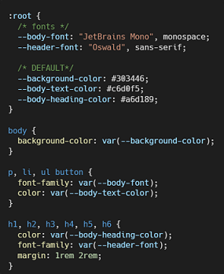

CSS Custom Properties (CSS Variables)
What are CSS Variables?
CSS Variables, or CSS Custom Properties, are a feature introduced in CSS3. CSS Variables are used to define the names and attributes with values of properties according to our needs, providing a method for reusing and storing values across a stylesheet. This feature increases the modularity of the code, which improves the readability and structure in CSS. Whether it is a solo project or a group project, CSS variables enables better organization and helps to maintain consistency.
For the syntax, two hyphens (--) are used as a prefix to indicate the CSS variables. Any valid CSS value, including characters, integers, and colors, can be saved in variables. In order to ensure encapsulation, the variables are scoped to the selector where they are defined – often in the root so the variables are accessible globally.
What do CSS Variables do?
CSS variables enhance stylesheet maintenance by organizing variables in a modular fashion, streamlining code and improving readability. Providing a point of reference for values ensures a stylistic consistency, which is crucial for building a cohesive website. Once a specific value is assigned to a variable, it can be reused throughout the code, promoting scalability and flexibility in the stylesheet.
CSS variables establish a standardized vocabulary for values, fostering collaboration among developers. This is particularly valuable when working on complex websites that may undergo changes during development. Developers can efficiently modify designs by changing the original variable value instead of reassigning it in every instance. Essentially, variables streamline style updates, reducing the need for significant code modifications and simplifying web design. The dynamic nature of CSS variables enables responsive design changes.
Why would you use CSS Variables?
There are many reasons one would prefer using CSS Variables, but lets boil it down to a few main points. Simplicity, modularity, & readability
If you have variables it allows for modularity, with modularity comes consistencey. Its better shown as an example then explained in point form. When working on projects, it's common to see the same color used multiple places within your stylesheet. If you want to update a color a few shades brighter, it would bea poor use of time to go to each individual property and update the hex values seperatly. It's time consuming, its inconsistent, and produces unreliable code. By creating a CSS variable within the :root element it is creating a variable with a global scope, you can then access it in almost any spot within your stylesheet. This means you are applying the value in a singular spot, and referencing that value throughout your stylesheet. Creating simplicity, and modularity. Allowing for better collaboration between peers, and an easier to learn code base for new comers.
Where would you use CSS Variables?
CSS custom properties, or variables, are essential to maintaining consistency and modularity, particularly in large projects. They are used in CSS files to define repeating values. CSS custom properties, whether used to specify margins or establish color palettes, are adaptable and can be used in any CSS code. Their adaptability not only helps code organization but also readability, accommodating circumstances ranging from small modules to large stylesheets. In CSS, variables are declared within the :root selector, ensuring their global accessibility throughout the stylesheet. When working with JavaScript, you can utilize the values of CSS variables by applying them using the setProperty() method.
CSS Variables: Pros and Cons
PROS:
- Reusability / Modularity: CSS Variables promote efficient code by encouraging the reuse of values, fostering a modular approach.
- Maintainability: Easy-to-update code with centralized values for a smoother development process.
- Readability: Improves code understanding through better organization and semantics.
- Consistency: Guarantees a consistent look and feel across the entire project, ensuring a cohesive user experience.
- Theming: Dynamic theming capabilities allow for easy personalization, creating a more engaging user experience.
- Fallback Argument: CSS Variables provide fallback values, ensuring consistent styles, especially in older browsers.
- Adapts to different screen sizes, making designs responsive and dynamic.
CONS:
- Browser Compatibility: Support for CSS variables may vary across browsers, requiring careful consideration, particularly in outdated ones.
- Limited Dynamic Behavior: While dynamic, working around CSS variable limitations may be necessary for certain designs.
- Global Scope Reassignment Conflicts: Reassigning variables globally may lead to conflicts, requiring careful management to prevent design issues.